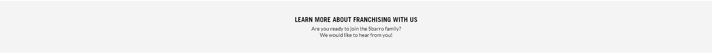
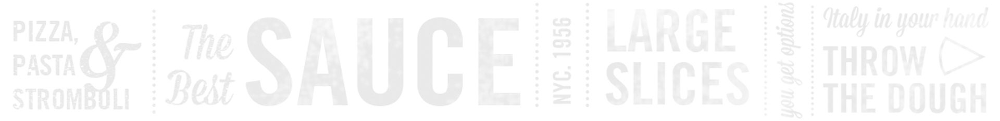

Thank you for your interest in becoming a member of the SBARRO family.
At SBARRO we believe nothing but the freshest handmade pizzas and pastas must be served to our guests; a tradition we have been keeping since
Gennaro and Carmela Sbarro founded their first SBARRO in 1956. We believe that all food should start with passion, pride and authenticity and that it’s
made even better with all that’s fresh and flavorful today.
It is precisely this passion which has allowed SBARRO to become on of the largest pizza companies in the world, with over 800 branches across 33
countries. SBARRO continues to serve traditional New York Pizzas and more with a bold New York spirit that has made the brand name famous for over
50 years.
This year marks the 25th year SBARRO has been doing business in the Philippines. We have accomplished this by being committed to the timeless
tradition of hands-on pizza making, as well as a fearless pursuit of fresh flavor bringing the best of SBARRO’s roots to the Filipino Customer.
We pledge our full support, as well as the resources that come from being part of the SBARRO Philippines Team to create opportunities for the brand’s
growth and for existing and potential new Franchisees.
Again, we thank you for your interest and look forward to hearing from you!
President
Supersalute Foods Corporation
Sbarro Philippines
 Yes! Everything sold in SBARRO stores are handmade fresh all day, everyday. Pizzas and pastas are cooked and prepared in front of our customers.
SBARRO was founded on the belief that nothing but the freshest food must be served to guests. This is part of the DNA of every SBARRO store.
SBARRO was founded in 1956 by Gennaro and Carmela Sbarro. Since then, its grown to be one of the biggest pizza chains in the world! SBARRO has
been operating in the Philippines for the past 25 years and boasts a growing network of stores year on year.
ROI usually takes around 2 to 2 and a half years. Our team of experts will do their nest to train, support, and prepare franchisees to shorten this time as well.
We have assembled a team of experts to help prepare our franchisees to maximize their store’s potential. We provide site evaluation, training, operations and marketing support to our franchisees.